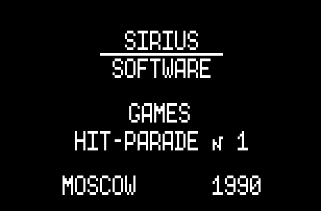
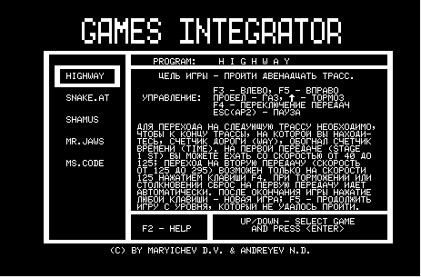
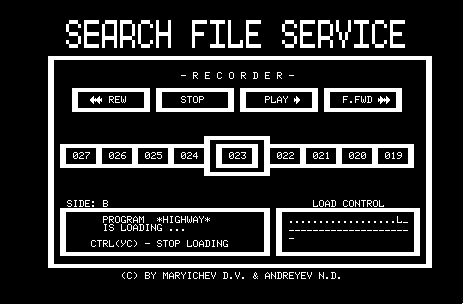
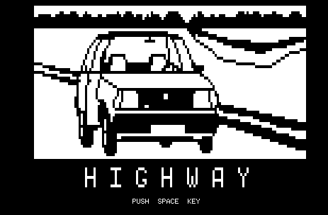
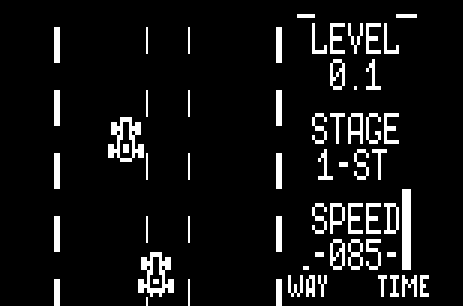

Games Integrator Hit parade 1 - это набор из нескольких игр от московской компании Sirius Software. Он сделан в виде загружаемой базовой программы (загрузчик), которая помогает загрузить выбранную игроком игру.

Необычное в этом загрузчике то, что он сделан в режиме автостарта. То есть, после загрузки своей первой части, он сам автоматически запускается. В Микроше нет функционала автоматического запуска загруженной программы, однако авторы Интегратора обошли это ограничение. Первая часть загрузчика загружается в область памяти в районе 7XXXh - адресов, где расположена вершина стека. Таким образом, при загрузке с магнитофона происходит перезапись вершины стека, в результате чего после завершения загрузки управление переходит не в Монитор, а по заданному адресу.
Вторая часть загрузчика подгружается после автозапуска первой части. Здесь имеется еще две необычные вещи: во-первых, последующая загрузка идет с включенным экраном (стандартная загрузка с магнитофона в Микроше происходит с отключением дисплея). Контроллер дисплея настраивается на более короткий пакет DMA запросов, т. е. процессор "тормозится" на более короткий промежуток времени, но чаще. Таким образом достигается более равномерная скорость работы процессора, и это позволяет отрисовывать картинку во время загрузки. Во-вторых, сам формат записи загружаемых данных совершенно отличается от стандартного: используются фальш-импульсы/фальш-блоки в сигнале и переменный битрейт. Сделано это, по всей видимости, для защиты от копирования.
После полной загрузки загрузчика появляется меню с выбором игры:

На магнитофонной ленте, после загрузчика, записаны сами игры. Игры записаны в нестандартном формате. Загружаемые данные разбиты на короткие блоки по несколько секунд, в заголовках которых хранится некотороая служебная информация, например, номер блока. В загрузчике имеется таблица, в которой записано, какая игра в каком диапазоне блоков находится.
После выбора игры появляется интерфейс загрузки игры. На скриншоте ниже видно, что происходит загрузка игры *HIGHWAY*, загрузилось почти половина игры (область LOAD CONTROL), и что в настоящий момент происходит загрузка блока номер 23.

Такой интерфейс позволял быстро найти нужное место на магнитофонной кассете: можно был примерно перемотать кассету вперед или назад, и по номеру блока понять, где начало нужной игры. Кнопки на экране REW, STOP, PLAY, F.FWD подсказывали, какую кнопку надо нажать на магнитофоне, чтобы быстро найти начало игры.
После загрузки появлялась заставка игры, и после нажатия любой клавиши запускалась, непосредственно, сама игра.


К этой записи прикреплены звуковые файлы Games Integrator с форума nedopc.org. Так же прикреплен архив с видео и со скриншотами игр.
Существуют так же файлы этого игрового набора на сайте onego.ru, причем в двух вариантах - просто для Микроши, и для ПЭВМ Башкирия (хотя вариант для Башкирии вроде как подходит для Микроши). Однако эти файлы не получилось загрузить ни в эмулятор, ни в настоящую Микрошу.